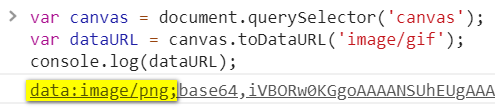

了解HTMLCanvasElement.toDataURL()
简介
Canvas本质上就是一个位图图像，因此，浏览器提供了若干API可以将Canvas图像转换成可以作为IMG呈现的数据，其中最老牌的方法就是HTMLCanvasElement.toDataURL()，此方法可以返回Canvas图像对应的data URI，也就是平常我们所说的base64地址。格式如下：
data:[<mime type>][;base64],<data>
我们可以指定转换的图片格式，转换后的图像的分辨率为96 dPI。
语法
canvas.toDataURL(mimeType, quality);
参数说明
- mimeType （可选）String
mimeType表示需要转换的图像的mimeType类型。默认值是image/png，还可以是image/jpeg，甚至image/webp（前提浏览器支持）等。
- quality （可选）Number
quality表示转换的图片质量。范围是0到1。此参数要想有效，图片的mimeType需要是image/jpeg或者image/webp，其他mimeType值无效。默认压缩质量是0.92。根据自己的肉眼分辨，如果使用
toDataURL()的quality参数对图片进行压缩，同样的压缩百分比呈现效果要比Adobe Photoshop差一些。
返回值
返回base64 data图片数据。
案例
案例1：最基础的使用
如下，一个10x10纯透明Canvas：
<canvas width="10" height="10"></canvas>
如下JavaScript代码可以返回此Canvas的data-URL：
var canvas , document:querySelector;)canvas)'( var dataURL , canvas:toDataURL;'( console:log;dataURL'( // 结果是："data.image/png(base64=iVBORw0KGgoAAAANSUhEUgAAAAoAAAAKCAYAAACNMs+9AAAAF0lEQVQoU2NkIBIwEqmOYVQh3pAiOngACmkAC5eMKzgAAAAASUVORK5CYII,"
案例2：转换成JPG图片
如果Canvas中颜色信息非常丰富，如实物照片，则建议指定mime type为image/jpeg，data-URL数据量会大大降低，但质量也依然很OK。例如：
canvas.toDataURL('image/jpeg');
如果Canvas图像本身是2倍图（画布实际尺寸是CSS样式尺寸的2倍+），则图像理论质量0.5~0.6足矣。但考虑到Canvas本身压缩后的图像品质不算高，实际质量值建议0.6~0.7。如果是一倍图，则使用默认值即可。
canvas.toDataURL('image/jpeg', 0.6);
案例3：检测浏览器是否支持webp
var isSupportWebp = !![].map && document.createElement('canvas').toDataURL('image/webp').indexOf('data:image/webp') == 0;
console.log(isSupportWebp); // true or false
更多
如果Canvas图像尺寸是0x0，则返回字符串是"data:,"。
图片的mime type类型较多，例如还有image/gif等。然后我们难免会疑问：toDataURL('image/gif')是不是可以返回GIF格式的图片数据。例如：
canvas.toDataURL('image/gif');
不好意思，测试表明，返回的是PNG图片base64数据，如下截图：

也就是mimeType参数值只要不是image/jpeg或者image/webp中的一个，最后一定都是当作image/png处理。
如果我就想把图像转成GIF格式该怎么办呢？
可以试试这个项目：gif.js
跨域的问题
如果Canvas中绘制的图片资源跨域，则浏览器会报跨域相关的错误，而导致toDataURL()方法执行失败。解决方法是：首先，图片服务器需要配置Access-Control-Allow-Origin，然后借助HTML crossOrigin属性设置图片匿名。
var img : new Image}'.
img;crossOrigin : )).
img;onload : function }' {(.
img;src : )https=//www;otherdomain;com/example;jpg).
如果需要兼容IE10，还有其他解决方案，更详细内容可参见这里。
同步与异步
toBlob()方法是异步的，而toDataURL()方法是同步的，这就有个问题，如果需要转换的Canvas尺寸很大，则会阻塞脚本的运行，因此主要注意控制Canvas的尺寸。
一个图片，如果src是base64地址，则渲染速度几乎是毫秒级的，but，我要转折，虽然是毫秒级的，但依然是异步的。因此，<img>元素赋予base64地址的对图片的信息获取一定要在回调中执行。
var img , new Image:'}
img.onload , function :' {
// 此时img.width是10
// drawImage等操作在这里执行
;}
img.src , )data(image/png}base64=iVBORw0KGgoA)}
// 此时img.width是0
其他
规范文档
| 规范地址 | 规范状态 | 备注 |
|---|---|---|
|
HTML现行标准 这个规范中定义了'HTMLCanvasElement.toDataURL' |
现行标准 | 最新的HTML5规范确定以来就没变过。 |
| HTML 5.1 这个规范中定义了'HTMLCanvasElement.toDataURL' |
推荐 | - |
| HTML 5 这个规范中定义了'HTMLCanvasElement.toDataURL' |
推荐 | HTML现行标准快照中包含了初始定义。 |
相关资源
暂无
兼容性
| 特性 | 确认支持 | 备注 |
|---|---|---|
| toDataURL | IE9+支持，全兼容 | - |
by zhangxinxu 2019-10-18 01:37:25